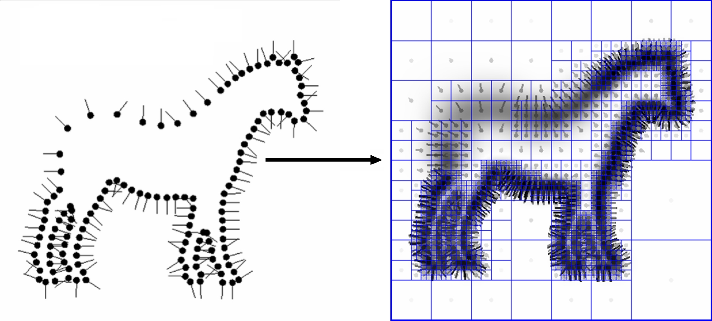

Poisson Surface Reconstruction¶
Web references¶
StreaminRecon¶
http://www.cs.jhu.edu/~bolitho/Research/StreamingSurfaceReconstruction/
une autre version mais pas possible de compiler (icpc et icc) car necessite le compilateur intel necessite un format special en entree.